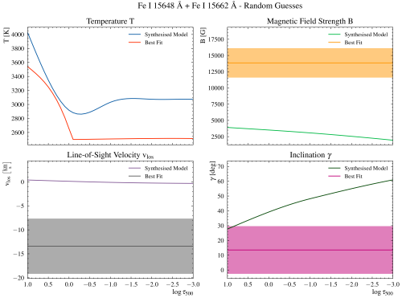

Temperature#
Problems#
Emission Lines
If the temperature rises in an area where the line is sensitive, the line shows an emission profile.
Low Continuum Intensity
If the temperature is too low, the continuum intensity is too low and the effect of the magnetic field and velocities are not measurable => Is not observed on the sun
Unrealistic Stokes Profiles
If the temperature curve is not “good”, the Stokes Profiles can look weird and an unexpected behaviour compared with the reality
E.g. this can happen:
Stokes Profile 15648 Å |
Stokes Profile 15662 Å |
Model Temperature |
Model |
|---|---|---|---|
|  |
{kind=link}
{kind=link}
{kind=link}
{kind=link}
Implemented Ideas#
It was challenging to find a correct way how to randomise the temperature. Why is that? The reason is the high influence of the temperature on the Stokes profiles and in the continuum. If the temperature is too low, Stokes I is so “dark” that the line cores only have a significance of 1% which is too close to the noise level. I tried several ways:
Creating the temperature by using splines between five points to get similar curves as known models.
Problematic because the behaviour between the nodes is not specified and the spline function interpolates however it sees fit. This caused rises in the temperature leading to emission lines and the fits were quite odd.
Overall, the huge impact of the temperature influenced all the results and also how precise they can be retrieved in the MC simulation.
The 2nd attempt was to make sure that the temperature shape was decreasing at log tau > -2.5. I did this by checking whether the function is monotonically decreasing or not in that area. If this is not the case, a new random temperature curve is created.
This helped to eliminate the cases where the temperature curve led to emission lines instead of absorption lines.
The problem with this is, firstly, that it requires more computing time since I need to redo the randomisation of the temperature.
Another problem is to find enough nodes that the temperature curve looks similar to known models but also not to have too many nodes, otherwise the randomisation may be not so random after all.
Another problem is, that I want to include the correlation between the temperature and the magnetic field to a specific degree. I did not want to restrict it too much, but the magnetic field strength should have an influence. The chosen approach to implement this correlation was not that trivial, as it highly depends on my maximum magnetic field strength. I did it in such a way that the temperature nodes are smaller the higher the magnetic field is. As I have changing maximum magnetic field strengths (depending on what I want to simulate) the temperature range for the nodes needed to be adapted depending on the maximum field strength. I implemented it the following way: I have 5 nodes and each node has a temperature range. The maximum value in the ranges depends on the magnetic field value at log tau 1 (the first value in the model). I simply factorised this value and subtracted it from the maximum reachable temperature number. These factorising numbers depend highly on the maximum magnetic field and need to be adapted depending on the magnetic field. This makes it not suitable but with a better implementation, this influence could have been neglected.
I encountered problems that when I have a high magnetic field, the temperature curves were flat => The factorising numbers were too big but needed for lower magnetic fields (otherwise the magnetic field would play no role in smaller magnetic field strengths)
- I took two models: A model for a cool umbra (cool) and a quiet sun model (HSRA). I created a parameter space between these two temperature curves. I compute a random factor between 0 and 1. This value specifies the difference between the first and second model. 0 means that I use the cool model and 1 means I use the quiet sun model. The temperature value at each log tau value can be computed as
- \[T(\tau) = f · (T_{\mathrm{HSRA}}(\tau) - T_{\mathrm{cool}}(\tau)) + T_{\mathrm{cool}}(\tau)\]
Using this model gives me the following advantages:
The temperature curve is random but realistic.
The magnetic field strength has an impact as I can limit the range of the factor depending on the absolute value of the magnetic field strength.
I can adapt easily the temperature curve to different models or the impact of the magnetic field on the temperature.
Final Solution#
I chose the third solution as it is the most robust and it always produces realistic Stokes Profiles.
The parameter area for the 3rd method is the following:
{kind=link}
Randomisation#
To randomise the temperature, three randomisations are realised:
Additive Random Parameter (the factor f)
Multiplicative Random Parameter (Multiplication of the cool model by a factor)
Rotating Random Parameter (Rotation around log tau -1)